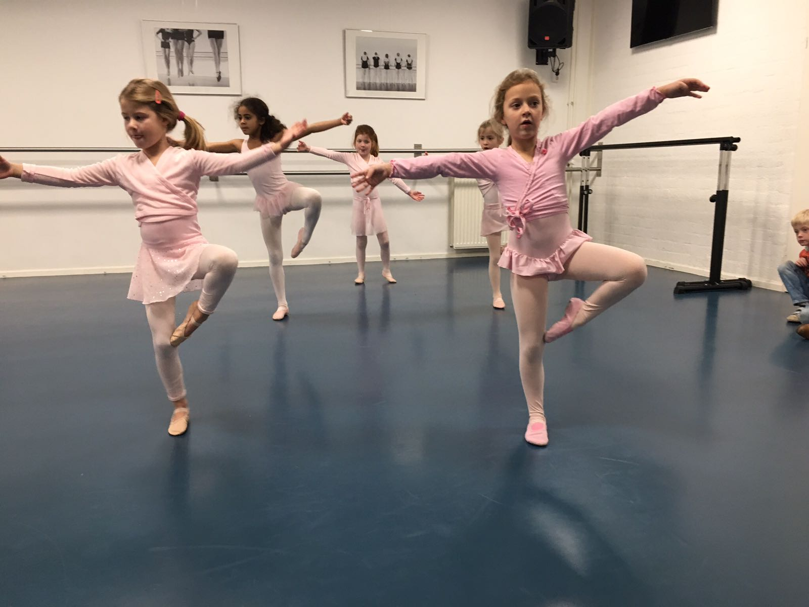
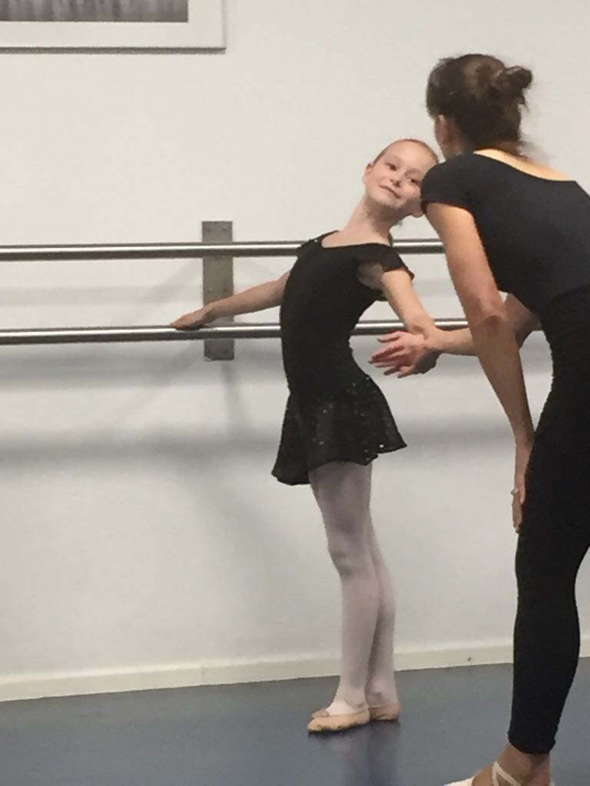
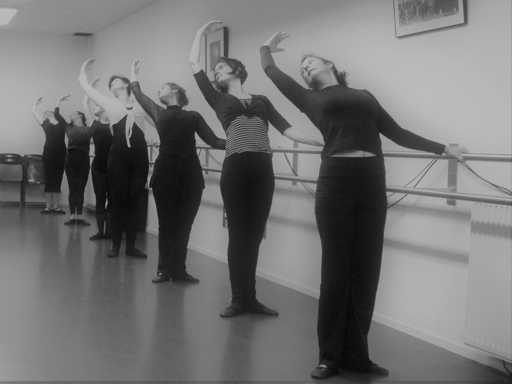
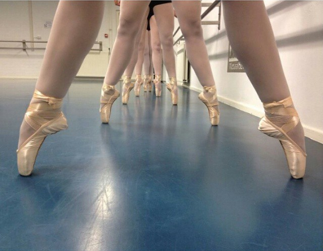

Peuter dans (P1)
 Kindjes van 2 tot 4 jaar kunnen in deze lessen vrij bewegen en kennis maken met dans en muziek. De les duurt drie kwartier en er mag een ouder/opa of oma bij zijn.
We starten per 13 september een nieuwe korte cursus!
Kindjes van 2 tot 4 jaar kunnen in deze lessen vrij bewegen en kennis maken met dans en muziek. De les duurt drie kwartier en er mag een ouder/opa of oma bij zijn.
We starten per 13 september een nieuwe korte cursus!
Kleuter Ballet (K1)
 Voor kleuters binnen Babs Balletschool (groep 1 en 2 van de basisschool) zijn er de Kleuterlessen. Tijdens de Kleuterlessen worden de kinderen wegwijs gemaakt met de verschillende manier van voortbewegen en leren zij de basis principes van een balletles. Er wordt gebruik gemaakt van diverse soorten muziek (van kinderliedjes tot klassiek). Fantasie en inbeeldingen maken van de dansoefeningen een beleving. De Kleuterlessen duren 3 kwartier. Aan het eind van het schooljaar ontvangen de oudste kleuters een Dans Diploma waarmee zij mogen doorstromen naar het Kinderballet.
Voor kleuters binnen Babs Balletschool (groep 1 en 2 van de basisschool) zijn er de Kleuterlessen. Tijdens de Kleuterlessen worden de kinderen wegwijs gemaakt met de verschillende manier van voortbewegen en leren zij de basis principes van een balletles. Er wordt gebruik gemaakt van diverse soorten muziek (van kinderliedjes tot klassiek). Fantasie en inbeeldingen maken van de dansoefeningen een beleving. De Kleuterlessen duren 3 kwartier. Aan het eind van het schooljaar ontvangen de oudste kleuters een Dans Diploma waarmee zij mogen doorstromen naar het Kinderballet.
Kinder Ballet (K2 t/m K4)
 Voor kinderen vanaf 6 jaar t/m 8 (groep 3 t/m groep 5 basisschool) is er bij Babs Balletschool het Kinderballet. Tijdens de Kinderballetlessen van een uur per week worden verschillende manier van bewegen uitgediept en wordt er gewerkt aan houding en coördinatie. Kinderen leren de eerste beginselen van de ballettechniek. Met deze techniek is de basis gelegd voor alle andere dansstijlen die later volgen. Dit wordt op speelse wijze gebracht en aangepast aan de leeftijd, de fysieke ontwikkeling en de beleving van de kinderen. Door het gebruik van verschillende stijlen muziek en improvisatie oefeningen kunnen de kinderen ook hun eigen creativiteit ontwikkelen. In K4 sluiten de kinderen als zij er klaar voor zijn hun Kinderballet af met een Diploma en kunnen zij doorstromen naar het eerste niveau Ballet (B1), Moderne dans (M1) , Folklore (F1) of Jazzballet (J1).
Ballet (B1 t/m B10)
 Ballet is de basis voor alle andere theaterdans vormen. Vanaf 9 jaar (Groep 6) bestaan de balletlessen uit een technisch gedeelte aan de barre en een dansant gedeelte "au milieu". Dit bestaat o.a. uit ballans oefeningen, sprong en draai technieken en verplaatsende passen. Er wordt ook gewerkt aan kracht en lenigheid. Door de geleerde technieken toe te passen in een dansante combinatie ervaren de leerlingen ook hun eigen kunnen en gevoel voor expressie. Vanuit B1 kunnen leerlingen doorgroeien tot en met B10 eventueel aangevuld met spitzentechniek.
Ballet volwassenen Beginners ( niv. 1 of 2)
Altijd al ballet willen leren? Maar is het er nooit van gekomen? Heeft u geen ervaring met dansen? Dan is dit de kans! Deze lessen zijn voor iedereen die graag de basis willen leren, maar ook zeer geschikt voor leerlingen die naast hun eigen les de basis willen oppoetsen.
In deze les wordt er kennis gemaakt met de basis van de ballettechniek. Technische oefeningen aan de barre en grondoefeningen worden afgewisseld met dansante combinaties waarin het dansante gevoel en het dansplezier naar voren komt. Ook wordt er veel aandacht besteed aan de juiste lichaamshouding.
Ballet Volwassen (beginner/ intermediate/ gevorderd)
 Er zijn verschillende niveau's voor volwassenen, beginners zonder, of met een beetje ervaring, mensen die her-intreden,en mensen die graag willen blijven trainen. Er is veel aandacht voor de basistechniek, lichaamshouding en coördinatie. Doormiddel van dansante combinaties worden techniek, expressie en dansplezier samengevoegd. Aansluitend op de intermediate/gevorderde lessen is een uitbreiding met spitzen techniek mogelijk. Kom gerust een proefles meedoen om samen te ontdekken welk niveau het beste bij je past.
Spitzen Lessen
 Het dansen op spitzen is zowel technisch als gevoelsmatig de ultieme uitdaging voor de danser en geeft het "echte klassieke ballet" gevoel. De slagroom op de taart zou ik zeggen. Leerlingen uit de hogere niveaus kunnen, in overleg, uitbreiden met spitzen techniek. Het volgen van de Spitzen lessen is voor leerlingen mogelijk als hun voeten zijn uitgegroeid en zij voldoende ballettechniek en kracht hebben ontwikkeld. Bij een afwijking in heup /rug of voeten moet er overleg worden gepleegd met de docent en een fysiotherapeut/arts. De aanschaf van Spitzen gaat in overleg en is voor eigen rekening. Voor het extra spitzenkwartier wordt een extra bedrag bovenop het inschrijfgeld gerekend.